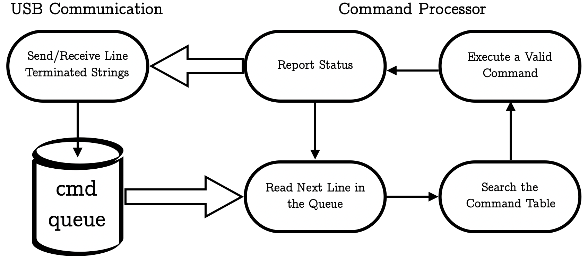

Code Flow¶
At the top of the abstraction ladder, the project consists of two processes: USB Driver and Command Parser connected through a Command Queue.
The Main Loop¶
USB Communication and Command Processor illustrated on the diagram above shake hands in the main loop. Strings stored in UsbComm::usb_queue are bing fed to the CommandParser, then CommandParser makes sense of the input and spits out a response, back to the UsbComm. Let’s take a closer look to what exactly happens.
/* Infinite loop */
while(true)
{
// If there are commands in the usb queue -- execute them.
if(UsbComm::usb_queue.get_queue_size() != 0){
const auto response = CommandParser::execute(UsbComm::usb_queue.get_next_cmd());
// Respond to the command
UsbComm::usb_send(&response);
// Remove pending command from the queue
UsbComm::usb_queue.free_pending_cmd();
}
In the snippet above, received commands are put into a queue elsewhere. Leave the reception details to the mysterious UsbComm. Suppose the UsbComm::usb_queue.get_next_cmd() returns "servo 180", which tells our microcontroller to set a servo to 180 degrees.
Consider the following line:
const auto response = CommandParser::execute("servo 180");
CommandParser::execute searches the command table for a matching token (in this example token is "servo"). In case a match is found, the corresponding command handler is called. A substring of arguments (in this example "180") that follow the token is then passed to the command handler function. Finally, a meaningful status is returned ("ok", "unknown command", "invalid args", etc..).
Command Processor¶
This section will shine light on what specifically happens inside CommandParser::execute, in other words, how do received commands get executed?
Behind CommandParser::execute¶
The following code shows implementation of CommandParser::execute. Make yourself comfortable with C++ Algorithms library.
const std::string execute(const std::string &command){
// Check if help requested.
if(command[0] == '?'){
std::string help_str = help;
// Return a string with all the tokens and help strings.
std::for_each(command_table.begin(),
command_table.end(),
[&help_str](const Cmd &cmd_table_entry){
help_str += cmd_table_entry.token;
help_str += cmd_table_entry.help;
help_str += "\n\r";
});
help_str + "\r";
return help_str;
}
// Find the first space to seperate a token.
auto separator = command.find_first_of(' ');
// If there is no space, assume command has no arguments.
if(separator == std::string::npos)
separator = command.size()-1;
// Lookup the given token in the command table.
// In case found, returns a poiter to the corresponding command container.
const auto executable = std::find_if(command_table.begin(),
command_table.end(),
[&command, &separator](const Cmd &cmd_table_entry){
return cmd_table_entry.token == command.substr(0, separator);
});
// Check if given token exists in the command table.
if(executable == command_table.end())
return unknown_command;
// Execute the corresponding command from the table.
executable->execute(command.substr(separator + 1));
// Return status of the executed command.
return HardwareDriver::get_status();
}
Let’s break this down step-by-step.
Check if the first element in the string is
"?". In case it is - user requested help. For each command table entry print the token and the corresponding help string.
Warning
In case help is requested, the function returns the entire content of the command table in a single string, it is not an issue as long as the table is relatively small, but potentially leads to an overflow.
We need to break down the received string into a token and arguments. Look for the first occurrence of space character
" "and save it’s location into the variableseparator. What if our command does not have arguments? Thus there is no space separator in the given string. In such case, set the separator to represent the last character in the string, which is always"NULL".
Now, the token can be acquired by calling
command.substr(0, separator). The argument string consists of all the characters past the separator, orcommand.substr(separator + 1)
Find if the token in the received string exists in the table. In case it does, a call to
const auto executable = std::find_if(...)returns a pointer to the object in the the table with the matching token. In case such token does not exist,const auto executablepoints to the end of the command table.If the token was not found, exit the function returning
unknown_commandstatus.
// Check if given token exists in the command table.
if(executable == command_table.end())
return unknown_command;
If we got to this point, the token exits in the table, let’s execute the corresponding command handler. Remember we saved the pointer to the corresponding entry in the command table. Each entry in this yet mysterious table is an object which encapsulates a token, a help string and a pointer to the handler function. This object has a helper method, which can be called to execute the handler function
object.execute(...)
// Execute the corresponding command from the table.
executable->execute(command.substr(separator + 1));
We feed the argument string to the command handler letting it further parse the arguments.
Note
An attentive reader might notice that passing a raw argument string to the command handler means that each command handler must have a similar routine to further parse the arguments. A better approach would be passing a vector of argument-strings while recursively separating the arguments within the CommandParser::execute function. Keep in mind, these argument-strings can represent both strings and numbers.
Finally, return status. Why
HardwareDriver::get_status()? All command handlers are part of thenamespace HardwareDriver, where they share a status string.
Command Table¶
What underlying information do we need to know to execute a given command?
A Token, command’s first name.
Command Handler, what should the microcontroller do when the token is called.
A Help String, would be nice to know what the command does.
We can use a helper class to package all the info about each command. Take a look at class CommandParser::Cmd declaration.
//! Command container class.
/**
* @brief This container is used to place commands into the command lookup table.
*/
class Cmd {
public:
//! Default Cmd constructor.
/**
* @param token Command token used to call the specified command.
* @param help Help string.
* @param cmd_handler Function to be executed when command with the token is called.
*/
Cmd(std::string token, std::string help, std::function<void(std::string)> cmd_handler):
token(token),help(help),cmd_handler(cmd_handler){};
//! execute method.
/**
* @brief Public method to call the command handler.
* @param arg Argument string passed to the command handler.
*/
void execute(std::string arg) const{
cmd_handler(arg);
};
const std::string token; // Command token.
const std::string help; // Help string.
private:
// Command Handler function pointer.
const std::function<void(std::string)> cmd_handler;
};
Note how the constructor populates the only three constant members. There is a single method to call the command handler. The mysterious command table is an array of Cmd objects.
Warning
Example below is simplified for illustration, the actual command table can be found here.
// Command table. Please keep alphabetical order.
const std::array<Cmd, 2> command_table = {
Cmd("led", "set led power [0-100]%", HardwareDriver::led),
Cmd("servo", "set servo angle [0-180]deg", HardwareDriver::servo)
}
The table above initializes two entries with tokens "led" and "servo"
USB Communication¶
USB Communication Device Class, in short USB CDC or virtual com port is a Driver provided by STM to handle all aspects of USB communication the microcontroller is capable of. When connected to a host, the Driver emulates a tty-like device on a Unix system (COM device on Windows). The nature of the USB protocol and the Driver’s code itself are very sophisticated and will not be discussed in this manual. In fact, USB Driver takes up a significant amount of microcontroller’s flash, in our case about 30%. The Driver resembles a process which handles initialization, pinging, power management, packet wrapping, redundancy checks, etc.. on the background giving us callback-based interface to RX/TX capabilities, and connect, disconnect events. These callbacks reside in the following source file.
Let’s take a look at the Receive callback function.
/**
* @brief Data received over USB OUT endpoint are sent over CDC interface
* through this function.
*
* @note
* This function will block any OUT packet reception on USB endpoint
* untill exiting this function. If you exit this function before transfer
* is complete on CDC interface (ie. using DMA controller) it will result
* in receiving more data while previous ones are still not sent.
*
* @param Buf: Buffer of data to be received
* @param Len: Number of data received (in bytes)
* @retval Result of the operation: USBD_OK if all operations are OK else USBD_FAIL
*/
static int8_t CDC_Receive_FS(uint8_t* Buf, uint32_t *Len) {
/* USER CODE BEGIN 6 */
UsbComm::usb_queue.insert_received_elements(reinterpret_cast<char*>(Buf), Len);
USBD_CDC_SetRxBuffer(&hUsbDeviceFS, &Buf[0]);
USBD_CDC_ReceivePacket(&hUsbDeviceFS);
return (USBD_OK);
/* USER CODE END 6 */
}
The STM’s USB Receive callback leaves us with a pointer to a received data buffer and the buffer’s length. Also, the comment above the code politely tells us that while we are enjoying our time inside the callback, usb reception is interrupted. Let’s take the data and get out!
We could append the data into an array defined elsewhere, when we see "\r" execute it away. There are issues we need to consider. What if multiple commands are being received at the same time? or the callback leaves us with unfinished command? or both issues happen at once? In situation such as this we need Flow Control. Template class CommandQueue implements a Flow Controlled Queue based on C++ deque library, here are some features:
Each entry in the queue is a
"\r"terminated command.The insertion method ``insert_received_elements(uint8_t* Buf, uint32_t *Len) must take the same format as arguments passed to the the USB Receive Handler.
The most recent entry can be unfinished, and
get_queue_size()accounts for the unfinished entry.The oldest terminated command in the queue is accessible by a pointer, not a copy assignment.
We further instantiate a command queue in the USB helper namespace UsbComm. Notice the abstraction here, if we decided to use another interface, say SPI instead of USB, we would just need an SPI helper class instead of UsbComm, CommandQueue template would remain the same. The characters received through the USB callback are placed into UsbComm::usb_queue, a queue of strings.
UsbComm::usb_queue.insert_received_elements(reinterpret_cast<char*>(Buf), Len);
Back to our Main function, UsbComm serves as an abstraction layer between STM’s Driver and CommandParser providing functionality to send and receive data.
//! class UsbComm
/**
* @brief A helper class to handle usb cdc communication.
*/
class UsbComm {
public:
//! printf implementation
/**
* @brief This function sends a string over USB virtual com port.
* @param str_to_send Pointer to the string to be sent.
*/
static void usb_send(const std::string *str_to_send);
// A Queue of commands seperated by '\r'
static CommandQueue<std::string, '\r'> usb_queue;
};
We have covered the abstract firmware architecture and code flow. The next chapter covers HardwareDriver and the usage of microcontroller peripherals.